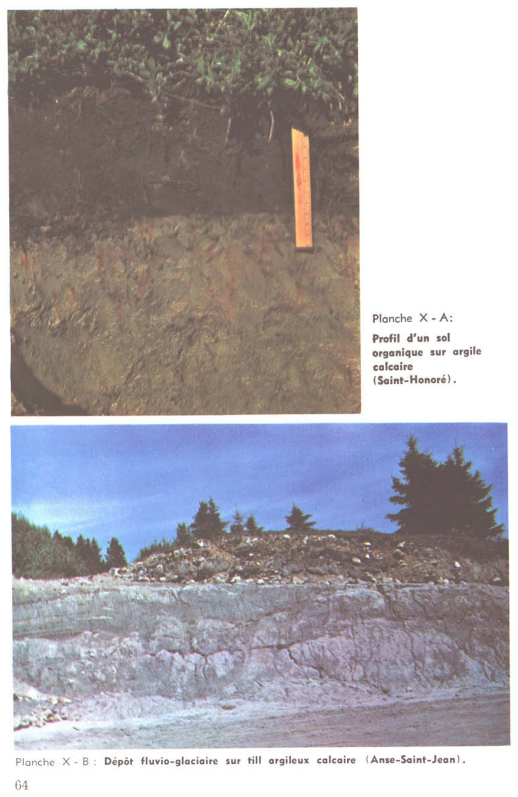

Identification & Caractéristiques Générales
La série Saint-Jean se développe sur un matériau parental constitué de tills morainiques d'origine glaciaire, modifiés ou remaniés par les transgressions marines et les dynamiques fluvio-lacustres quaternaires des Basses-Terres du Saint-Laurent. Ces sols occupent généralement des positions topographiques de plaines inclinées à modelé ondulé ou morainique, caractérisées par des pentes faibles à modérées variant de 1 à 5 %. La surface du sol présente une pierrosité variable, allant de légèrement à modérément pierreuse, témoignant de la nature hétérogène et caillouteuse du substrat morainique d'origine sous-jacent.
Le profil pédologique montre une différenciation morphologique marquée par une texture grossière à moyenne en surface, souvent loamique à sablo-loameuse, reposant sur un sous-sol plus dense et compact. Le drainage naturel de ces sols est imparfait à modérément bien drainé, influencé par la présence d'un horizon sous-jacent à perméabilité réduite qui restreint l'infiltration verticale et favorise l'établissement d'une nappe perchée temporaire au printemps ou lors des épisodes de forte pluviométrie. La réaction du sol est généralement acide à neutre dans les horizons supérieurs, nécessitant un suivi régulier du pH pour optimiser la disponibilité des éléments nutritifs.
Sur le plan agronomique, la série Saint-Jean présente des aptitudes modérées pour la production agricole, permettant la culture des grandes cultures et des prairies fourragères, bien que la pierrosité et l'excès d'eau temporaire constituent des contraintes majeures pour la rentabilité des cultures horticoles ou maraîchères sensibles à l'asphyxie racinaire. Les principaux aménagements requis comprennent l'installation d'un réseau de drainage souterrain (drainage tile) pour abaisser la nappe phréatique temporaire, l'épierrage de surface pour préserver la machinerie agricole, ainsi que des apports réguliers de chaulage pour corriger l'acidité et maintenir un niveau de fertilité chimique adéquat.
Classification Taxonomique & Environnement Pédologique
| Ordre Pédologique | Gleysolique |
|---|---|
| Grand Groupe (SCSS) | Gleysol humique |
| Sous-Groupe Taxonomique | Gleysol humique orthique |
| Famille Pédologique | Squelettique-loameuse, mixte sableux, alcalin (calcaire) |
| Mode de Dépôt Parental | Morainique |
| Classe de Drainage Naturel | Mal drainé |
| Régime Thermique & Humidité | Doux / Perhumide |
Description Morphologique du Profil Type
Séquences génétiques des horizons pédologiques caractérisant le profil type représentatif de la série Saint-Jean :
Profil représentatif — Comté de St-jean — Phase de terrain
✓ Source : Comté de St-jean — Page 243Couleur Munsell : Non précisée
Structure & Consistance : Polyédrique à granulaire
Description morphologique : Pente (%)
Couleur Munsell : Non précisée
Structure & Consistance : Polyédrique à granulaire
Description morphologique : C org. (%)
Couleur Munsell : Non précisée
Structure & Consistance : Polyédrique à granulaire
Description morphologique : Argile (%)
Profil représentatif — Comté de St-jean
✓ Source : Comté de St-jean — Page 244Couleur Munsell : Non précisée
Structure & Consistance : Polyédrique à granulaire
Description morphologique : Pente (%)
Couleur Munsell : Non précisée
Structure & Consistance : Polyédrique à granulaire
Description morphologique : Ravinement
Profils Photographiques & Planches de Terrain
Documents iconographiques, figures pédologiques et coupes de terrain documentées dans les mémoires d'inventaire pour de la série Saint-Jean :




Propriétés Physico-Chimiques & Analyses de Laboratoire
| Col 1 | Col 2 | Col 3 | Col 4 | Col 5 | Col 6 | Col 7 | Col 8 | Col 9 | Col 10 | Col 11 |
|---|---|---|---|---|---|---|---|---|---|---|
| AR | 6R | - | - | - | - | - | - | - | - | - |
| AR2 | 6R | - | - | - | - | - | - | - | - | - |
| AV | 6IT | - | - | - | - | - | - | - | - | - |
| BA8 | O | F | F-M | F-M | E | M-E | F | - | M | F |
| BB6 | 3WD | F | F-M | F | M-E | E | F | F-M | F-M | F |
| BB9 | 3WD | F | F-M | F | M-E | E | F | F-M | F-M | F |
| BC4 | 3WD | F | F-M | F-M | M-E | M-E | F | F-M | F-M | F-M |
| BC4p | 3WD | F | F-M | F-M | M-E | M-E | F | F-M | F-M | F-M |
| BG5 | 3WD | F | M | F-M | M-E | M-E | M | M | M | F-M |
| BG5p | 3WD | F | M | F-M | M-E | M-E | M | M | M | F-M |
| BI4bq | 5PF | M-E | M | M-E | M | M-E | M | M | M | M-E |
| BI5bp | 4FT | M | M | M-E | M-E | M-E | M | M | M | M-E |
| BI5bq | 5PF | M-E | M | M | M-E | E | M | M-E | M-E | M-E |
| BO8 | O | F | F-M | F-M | E | E | M-E | - | M-E | F |
| BT3 | 3FW | F | M | M | M-E | M-E | F-M | M | M | F-M |
| BT3b | 3FW | F | M | M | M-E | M-E | F-M | M | M | F-M |
| BT3bp | 3FW | F | M | M | M-E | M-E | F-M | M | M | F-M |
| BX5 | 3WF | F | M | M | M-E | M-E | F-M | F-M | M | F-M |
| BX5bp | 3WF | F-M | M | M | M-E | M-E | F-M | F-M | M | F-M |
| BX8 | 3WF | F | M | M | M-E | M-E | F-M | F-M | M | F-M |
| BX8bp | 3WF | F | M | M | M-E | M-E | F-M | F-M | M | F-M |
| CA9m | 3WR | F | F-M | F | M-E | M | F | M | F-M | E |
| CB7 | 2W | F | F-M | F-M | M-E | E | F | F-M | M | F |
| CB7i | 4WI | F | F-M | F | M-E | E | F | F-M | M | F |
| CB7t | 3WI | F | F-M | F-M | M-E | E | F | F-M | M | F |
| CB7ti | 5WI | F | F-M | F-M | M-E | E | F | F-M | M | F |
| CC5bp | 3DW | F-M | F-M | M | M-E | M-E | F-M | M | M | F-M |
| CO5 | O | F | F-M | F-M | E | M-E | F | - | M | F |
Particularités Régionales, Phases & Variantes Pédologiques
Déclinaisons régionales, faciès texturaux, phases d'érosion ou de pierrosité et variantes cartographiées par étude pour de la série Saint-Jean :
| Étude Régionale | Symbole | Appellation / Phase / Variante | Différenciation avec la série type (Analyse pédologique) |
|---|---|---|---|
| Comté de Iberville | JE |
Saint-Jean till squelettique loameux | Modalité modale de référence (type de base de la série). |
JEb |
Saint-Jean till squelettique loameux pente de 2-5% | Phase de pente (2-5%) avec risque de ruissellement et d'érosion hydrique accrue. | |
JEi |
Saint-Jean till squelettique loameux phase inondée | Conforme à la série type de référence (caractéristiques texturales et drainage identiques). | |
JEp |
Saint-Jean till squelettique loameux légèrement à modérement pierreux | Phase pierreuse (abondance de cailloux et blocs en surface). | |
| Comté de Saint-jean | JEbp |
Saint-Jean loam 3-8 % de pente légèrement à modérément pierreux | Phase légèrement à modérément pierreuse (obstruction mécanique modérée). |
| Comté de St-jean | JEA |
Saint-Jean | Conforme à la série type de référence (caractéristiques texturales et drainage identiques). |
Distribution Pédo-Paysagère & Représentativité Cartographique (Couverture PPS 2026)
- Cette série forme principalement des unités pures sans association majeure répétée.
Aptitudes Agronomiques, Hydropédologie & Conservation des Sols
Indicateurs Hydropédologiques & Vulnérabilité à l'Érosion (BDHP 2026)
Interprétation BDHP : Potentiel de ruissellement modérément élevé. Faible taux d'infiltration, présence d'horizons ralentissant le drainage descendant.
Classement selon l'Inventaire des Terres du Canada (ITC / CLI) : Classe 2w.
- Potentiel agricole : Terroir adapté aux cultures régionales selon la texture dominante et la régie de drainage.
- Contraintes majeures : Mal drainé. Risque d'engorgement temporaire ou d'excès d'eau printanier.
- Gestion & Aménagement : Drainage souterrain ou superficiel préconisé sur les terres planes. Chaulage et apport organique régulier selon les bilans agronomiques.
- Cultures adaptées : Grandes cultures (maïs, soya, céréales), prairies fourragères et cultures maraîchères selon le contexte géomorphologique.